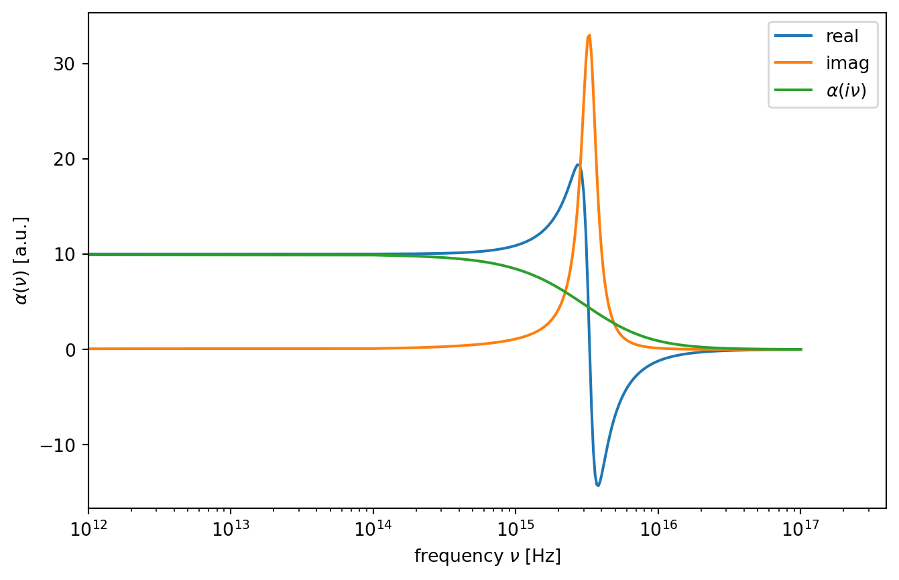
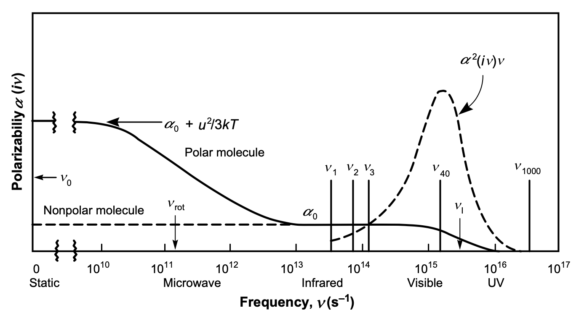

15 van der Waals Interactions
15.1 McLachlan Theory
The first complete microscopic theory for the vdW interaction involving 2 atoms in a medium, was proposed by McLachlan, which is expressed as
\[\begin{equation} w_{\mathrm{vdW}}(r)=-\frac{6 k_{\mathrm{B}} T}{\left(4 \pi \epsilon_{0}\right)^{2} r^{6}} \sum_{n=0}^{\infty}{}^{\prime} \frac{\alpha_{1}\left(i v_{n}\right) \alpha_{2}\left(i v_{n}\right)}{\epsilon_{3}^{2}\left(i v_{n}\right)} \end{equation}\]
The \(\sum^{\prime}\) notation denotes that the first term in the summation is multiplied by \(1/2\). The frequencies are sampled, only at discreet values that \(h v_{n}=2 \pi k_{\mathrm{B}} \operatorname{Tn}\) (known as the Matsubara frequencies). The typical \(\alpha(i v)-v\) plots of polar and non-polar molecules using the Lorentz model can be seen in the Figure below.

15.1.1 Frequency Dependent Polarizability
The electronic polarizability of a single atom can classically be approximated by a damped harmonic oscillator, i.e.
\[\begin{equation} m_{e}\ddot{x}+\Gamma m_e \dot{x}+m_e \omega_0^2 x=-e E(\omega) \end{equation}\]
Here \(\omega_0\) is the resonance frequency, \(m_e\) the electron mass, \(\Gamma\) the damping constant and \(E\) the external electric field. Solving this differential equation and using \(\omega=2\pi \nu\) yields the frequency dependent electronic polarizability
\[\begin{equation} \alpha(\nu)=\frac{\alpha_0}{1-i\Gamma \frac{\nu}{\nu_0^2}-\left ( \frac{\nu}{\nu_0}\right)^2} \end{equation}\]
15.1.1.1 Zero Frequency Contribution
At zero frequency, we know that the polarizability reduces to the form of
\[\alpha=\alpha_{0}+\frac{u^{2} }{3 k_{\mathrm{B}} T}\]
which results in the first term of the sum
\[ \begin{aligned} w_{\mathrm{vdW}}(\nu=0, r) &=-\frac{1}{2} \frac{6 k_{\mathrm{B}} T\left(\alpha_{01}+u_{1}^{2} /\left(3 k_{\mathrm{B}} T\right)\right)\left(\alpha_{02}+u_{2}^{2} /\left(3 k_{\mathrm{B}} T\right)\right)}{\left(4 \pi \epsilon_{0} \epsilon_{3}^{2}\right)^{2} r^{6}} \\ &=-\underbrace{\frac{u_{1}^{2} u_{2}^{2}}{3 k_{\mathrm{B}} T\left(4 \pi \epsilon_{0} \epsilon_{3}\right)^{2} r^{6}}}_{\text {Keesom }}-\underbrace{\frac{u_{1}^{2} \alpha_{02}+u_{2}^{2} \alpha_{01}}{\left(4 \pi \epsilon_{0} \epsilon_{3}\right)^{2} r^{6}}}_{\text {Debye }}-\underbrace{\frac{3 k_{\mathrm{B}} T \alpha_{01} \alpha_{02}}{\left(4 \pi \epsilon_{0} \epsilon_{3}\right)^{2} r^{6}}}_{\text {London(n=0) }} \end{aligned} \]
We immediately see the recovery of the Keesom and Debye energies, as well as the \(\alpha_{01} \alpha_{02}\) term from mathematical derivation. In fact, the last part is the zero-frequency part of the dispersion energy. Comparing the magnitudes of \(k_{\mathrm{B}} T\) and \(h v\), we can see that the zero-frequency contribution to the dispersion energy is negligible.
15.1.2 Optical Frequency Contribution
The lowest legal frequency \(h v_{1}=2 \pi k_{\mathrm{B}} T \approx 0.16 \mathrm{eV}\). The permanent dipoles cannot respond to such high frequency, therefore the dipole polarizability has no effect on the dispersion energy at optical frequencies. The electronic polarizability govern the dispersion energy at such frequencies. We first consider \(\epsilon_{3}=1\), that the 2 molecules are in vacuum.
The summation in the original equation can be estimated using continuous integral at optical frequencies, if temperature is very low. Since \(h \mathrm{~d} \nu=2 \pi k_{\mathrm{B}} T \mathrm{~d} n\), we can rewrite the integral from \(n=1\) to
\[\begin{equation} w_{\mathrm{vdw}}(\nu>0)=\frac{h}{2 \pi} \frac{6}{\left(4 \pi \epsilon_{0}\right)^{2} r^{6}} \int_{\nu_{1}}^{\infty} \alpha_{1}(i v) \alpha_{2}(i v) \mathrm{d} v \end{equation}\]
Using the approximate form of the polarizability
\[\alpha(i v)=\frac{\alpha_{0}}{\left[1+\left(v / v_{\mathrm{I}}\right)^{2}\right]}\]
and \(\epsilon_3=1\) we end up at
\[\begin{equation} w(\nu>0, r)=-\frac{3 \alpha_{01} \alpha_{02}}{2\left(4 \pi \epsilon_{0}\right)^{2} r^{6}} \frac{h v_{\mathrm{I} 1} v_{\mathrm{I} 2}}{v_{\mathrm{I} 1}+v_{\mathrm{I} 2}} \end{equation}\]
which is finally the London form of dispersion energy. Now we know why this interaction is called “dispersion”. The largest contribution to the energy comes from the range where \(v\) is close to \(v_{\mathrm{I}}\). Since \(v_{\mathrm{I}}\) is usually in UV range, such interaction is dominated by the polarizabilities from Vis to UV frequencies. As the polarizability and permittivity are closely related to the dispersion of light, it is not hard to understand why it is originally coined as “dispersion interaction”.